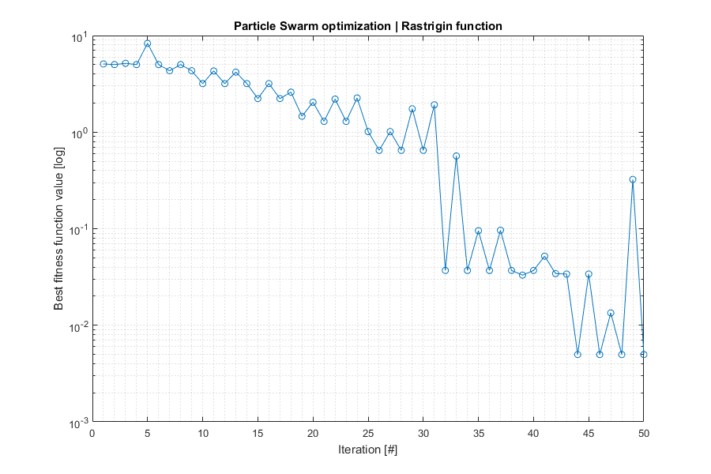
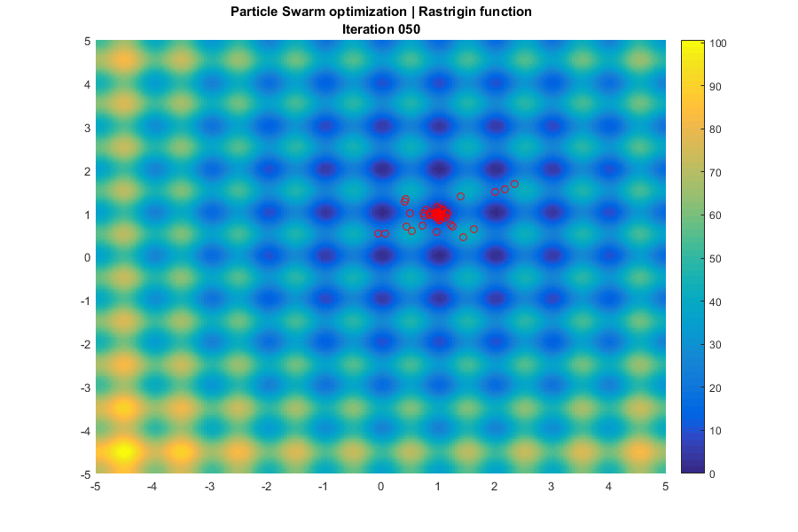

Contents
close all;
clear;
APS
ras = @(x,y) 20+(x-1).^2+(y-1).^2-10*(cos(2*pi*(x-1))+cos(2*pi*(y-1)));
opts.ninfo = 2;
opts.label = 10;
opts.dopar = 0;
opts.nhist = 2;
nitemax = 50;
np = 50;
c1 = 9;
c2 = 20;
P1 = 1E-2;
goal = 1E-5;
ranrange = @(a,b,n) a + (b-a)*rand(n,1);
fitfun = @(x) ras(x(1),x(2));
ranfun = @() ranrange(-5,5,2);
prifun = @(x) fprintf('%f %f ',x(1),x(2));
rng('shuffle');
for i=1:np
pop{i} = ranfun();
v{i} = 0.1 * ranfun();
end;
[ bestIndAPS, bestFitAPS, nite, lastPopAPS, lastFitAPS, history ] = ...
aps ( opts, pop, v, c1, c2, P1, nitemax, goal, ...
fitfun, prifun );
options = optimset('TolFun',1E-8,'Display','none');
[bestIndFMS,bestFitFMS] = fminsearch(fitfun,bestIndAPS,options);
fprintf('\nAlgorithm \tBest individual (x,y) \tValue\n');
fprintf('APS \t\t%1.6f,%1.6f \t\t%1.6E\n',bestIndAPS,bestFitAPS);
fprintf('FMS \t\t%1.6f,%1.6f \t\t%1.6E\n',bestIndFMS,bestFitFMS);
PS label=10 ite=1 best= 1.027067 -0.963041 vbest= 0.482440 0.183801 fbest=4.266949e+00
PS label=10 ite=2 best= 2.154310 0.052135 vbest= -0.041210 -0.128630 fbest=7.105995e+00
PS label=10 ite=3 best= 2.113100 -0.076494 vbest= -0.107083 -0.082323 fbest=5.951268e+00
PS label=10 ite=4 best= 2.006017 -0.158817 vbest= -0.104213 -0.085928 fbest=6.941199e+00
PS label=10 ite=5 best= 1.130847 -0.923502 vbest= -0.126220 -0.048087 fbest=8.043457e+00
PS label=10 ite=6 best= 1.004627 -0.971590 vbest= 0.126220 0.048087 fbest=4.050314e+00
PS label=10 ite=7 best= 1.130847 -0.923502 vbest= -0.126220 -0.048087 fbest=8.043457e+00
PS label=10 ite=8 best= 1.004627 -0.971590 vbest= -0.126220 -0.048087 fbest=4.050314e+00
PS label=10 ite=9 best= 2.926893 0.930370 vbest= -0.096015 -0.095000 fbest=5.696174e+00
PS label=10 ite=10 best= 1.004627 -0.971590 vbest= 0.126220 0.048087 fbest=4.050314e+00
PS label=10 ite=11 best= 0.922637 -0.929088 vbest= 0.117957 -0.065803 fbest=5.861954e+00
PS label=10 ite=12 best= 1.004627 -0.971590 vbest= -0.126220 -0.048087 fbest=4.050314e+00
PS label=10 ite=13 best= 0.926213 -0.923051 vbest= 0.113765 -0.072810 fbest=5.905339e+00
PS label=10 ite=14 best= 1.004627 -0.971590 vbest= 0.126220 0.048087 fbest=4.050314e+00
PS label=10 ite=15 best= 2.863362 1.043222 vbest= -0.091586 -0.099276 fbest=7.304903e+00
PS label=10 ite=16 best= 1.007353 -0.973917 vbest= 0.005551 -0.008241 fbest=4.041064e+00
PS label=10 ite=17 best= 1.012904 -0.982158 vbest= -0.031374 0.046581 fbest=4.024738e+00
PS label=10 ite=18 best= 2.063087 0.075041 vbest= -0.094932 -0.096081 fbest=3.852204e+00
PS label=10 ite=19 best= 1.968155 -0.021040 vbest= 0.094932 0.096081 fbest=2.266615e+00
PS label=10 ite=20 best= 0.027534 1.056776 vbest= 0.118081 -0.065580 fbest=1.727755e+00
PS label=10 ite=21 best= 1.968155 -0.021040 vbest= -0.118677 0.064496 fbest=2.266615e+00
PS label=10 ite=22 best= 0.027534 1.056776 vbest= -0.118081 0.065580 fbest=1.727755e+00
PS label=10 ite=23 best= 0.005371 0.849800 vbest= -0.079440 0.109239 fbest=5.149867e+00
PS label=10 ite=24 best= 0.027534 1.056776 vbest= 0.118081 -0.065580 fbest=1.727755e+00
PS label=10 ite=25 best= 0.042244 1.027705 vbest= -0.134539 0.011963 fbest=1.419394e+00
PS label=10 ite=26 best= 0.027534 1.056776 vbest= 0.021563 -0.133337 fbest=1.727755e+00
PS label=10 ite=27 best= 0.042244 1.027705 vbest= 0.134539 -0.011963 fbest=1.419394e+00
PS label=10 ite=28 best= 0.033528 1.057608 vbest= 0.047834 -0.103848 fbest=1.806418e+00
PS label=10 ite=29 best= 0.042244 1.027705 vbest= -0.134539 0.011963 fbest=1.419394e+00
PS label=10 ite=30 best= 1.033159 0.971936 vbest= 0.135053 -0.002108 fbest=3.731977e-01
PS label=10 ite=31 best= 0.042244 1.027705 vbest= 0.134855 -0.007622 fbest=1.419394e+00
PS label=10 ite=32 best= 1.033159 0.971936 vbest= -0.135053 0.002108 fbest=3.731977e-01
PS label=10 ite=33 best= 0.898106 0.974044 vbest= 0.135053 -0.002108 fbest=2.124110e+00
PS label=10 ite=34 best= 1.033159 0.971936 vbest= 0.135053 -0.002108 fbest=3.731977e-01
PS label=10 ite=35 best= -0.081481 0.014734 vbest= 0.102354 0.088133 fbest=3.465316e+00
PS label=10 ite=36 best= 1.033159 0.971936 vbest= -0.135053 0.002108 fbest=3.731977e-01
PS label=10 ite=37 best= 0.898106 0.974044 vbest= 0.135053 -0.002108 fbest=2.124110e+00
PS label=10 ite=38 best= 1.033159 0.971936 vbest= 0.135053 -0.002108 fbest=3.731977e-01
PS label=10 ite=39 best= 0.942833 0.987831 vbest= -0.133024 0.023419 fbest=6.708071e-01
PS label=10 ite=40 best= 1.033159 0.971936 vbest= -0.135053 0.002108 fbest=3.731977e-01
PS label=10 ite=41 best= 0.942834 0.987832 vbest= 0.133025 -0.023412 fbest=6.707976e-01
PS label=10 ite=42 best= 1.033159 0.971936 vbest= 0.135053 -0.002108 fbest=3.731977e-01
PS label=10 ite=43 best= 0.942834 0.987833 vbest= 0.133025 -0.023412 fbest=6.707938e-01
PS label=10 ite=44 best= 1.024779 0.994740 vbest= 0.047761 -0.126344 fbest=1.270520e-01
PS label=10 ite=45 best= 0.942834 0.987833 vbest= 0.134226 0.015075 fbest=6.707918e-01
PS label=10 ite=46 best= 1.024779 0.994740 vbest= -0.047761 0.126344 fbest=1.270520e-01
PS label=10 ite=47 best= 0.943508 0.982712 vbest= 0.133478 0.020673 fbest=6.857847e-01
PS label=10 ite=48 best= 1.024779 0.994740 vbest= 0.047761 -0.126344 fbest=1.270520e-01
PS label=10 ite=49 best= 0.985133 0.960969 vbest= 0.128644 0.041166 fbest=3.445404e-01
PS label=10 ite=50 best= 1.024779 0.994740 vbest= -0.047761 0.126344 fbest=1.270520e-01
Algorithm Best individual (x,y) Value
APS 1.024779,0.994740 1.270520E-01
FMS 0.999996,1.000000 2.438394E-09
Fitness plot
if opts.nhist>1 && iscell(history)
fithist = zeros(length(history),1);
for i=1:length(history)
fithist(i) = history{i,2}(1);
end;
else fithist = history;
end;
if ~isempty(fithist)
fh1 = figure('Position',[400,200,900,600]);
semilogy(fithist,'o-');
grid minor;
title('Particle Swarm optimization | Rastrigin function');
xlabel('Iteration [#]');
ylabel('Best fitness function value [log]');
end;

Generations plot
if opts.nhist>1 && iscell(history)
fh2 = figure('Position',[400,200,900,600]);
[x,y] = meshgrid(-5:0.05:5,-5:0.05:5); z = ras(x,y);
bh = surf(x,y,z,'LineStyle','none');
colorbar('Location','EastOutside');
view(0,90); hold on;
ph = cell(np,1);
for iter=1:length(history)
title({'Particle Swarm optimization | Rastrigin function';...
sprintf('Iteration %03.0f',iter)});
for i=1:np
x = history{iter,1}{i}(1);
y = history{iter,1}{i}(2);
z = 100;
ph{i} = plot3(x,y,z,'ro','MarkerSize',6);
end;
axis([-5 5 -5 5]);
drawnow;
pause(0.1);
if iter~=length(history)
for i=1:np, delete(ph{i}); end;
end;
end;
end;
